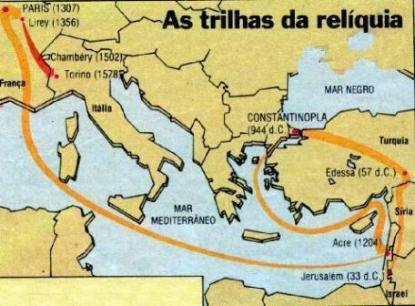
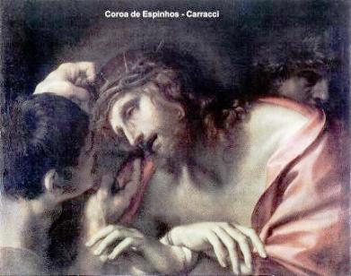
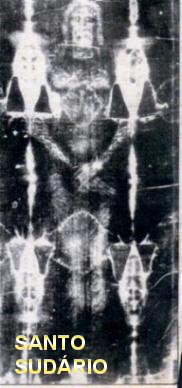
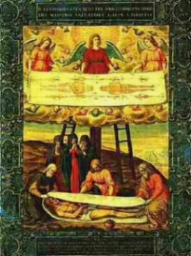
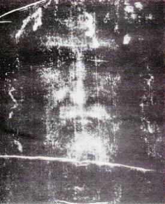

� grande a quantidade
de informa��es que quer reproduzir o prov�vel 
Encontramos na Biblioteca do Vaticano tr�s documentos que realmente s�o uma preciosidade: o Evangelho Ap�crifo de S�o Mateus escrito em aramaico, o Evangelho de JESUS segundo os Hebreus, o qual foi citado diversas vezes por S�o Jer�nimo em suas homilias e epistolas, e o Livro dos Atos de Filipos, todos eles escritos no s�culo I e II de nossa era. Nos mencionados textos encontram-se refer�ncias diretas ao Santo Sud�rio, provando a sua exist�ncia.
No ano 338, S�o Cirilo, Bispo de Jerusal�m, na Bas�lica do Santo Sepulcro (denominada na �poca, Bas�lica de Constantino) mostrava aos fieis frequentadores as provas da Ressurrei��o, exibindo o Sud�rio, os panos de linho que amarraram o Len�ol ao Corpo do SENHOR, o pano usado para manter a boca fechada (costume judeu), assim como um peda�o da pedra redonda com um veio esbranqui�ado, que foi utilizada para fechar o sepulcro. Estas provas tamb�m estavam relacionadas na XIV Mistag�gica, que era um conjunto de manuscritos utilizados pela Igreja primitiva para catequizar os fieis.
Entre os anos
550 e 565, Justiniano, �ltimo Imperador Romano, enviou emiss�rios � Jerusal�m,
a fim de tomar as 
Pouco tempo depois, no ano 670, o Bispo franc�s Dom Arculfo fez uma peregrina��o a Jerusal�m para tamb�m medir a altura do SENHOR.
0 vener�vel Beda no come�o do s�culo VIII, registra este testemunho de Arculfo em sua Hist�ria Eclesi�stica (De Locis Sanctis). Mais ou menos na mesma �poca, S�o Jo�o Damasceno assinala entre as rel�quias veneradas pelos crist�os em Jerusal�m, o "sindon". As palavras "sindon" e "sudarium" eram empregadas indiferentemente como sin�nimos.
Parece resultar de tudo isto que no s�culo VII, a Mortalha estava em Jerusal�m ou teria voltado para l� e que portanto, s� foi para Constantinopla mais tarde.
Em 1005, no s�culo XI, com a ocupa��o de Jerusal�m pelo mu�ulmano El Haken, os crist�os levaram todos os objetos sagrados para Antioquia na S�ria, escondendo-os em lugar seguro para evitar profana��es por parte dos hereges turcos.
De Antioquia, presume-se que o Sud�rio tenha sido levado primeiro para Edessa (1.050) e depois Constantinopla (hoje cidade de Istambul na Turquia), l� permanecendo de 1.092 a 1204, de acordo com as refer�ncias hist�ricas encontradas.
Luis VII, rei da Fran�a, em 1147 visitando oficialmente Constantinopla, teve a oportunidade de venerar o Santo Sud�rio .
Em 1171, o Imperador de Constantinopla Manuel Comneno, mostra a rel�quia ao Rei Adamauri de Jerusal�m.
Assim, com certeza no s�culo XII
o Sud�rio se encontrava em Constantinopla, 
Roberto de Clari, cavaleiro franc�s da Picardia, que tomou parte na tomada de Constantinopla em 1204, nos conduz a um terreno bem mais s�lido. Pelos cr�ticos de hist�ria e hagi�grafos, de um modo geral, ele � considerado como homem de instru��o m�dia, um pouco ing�nuo, que poderia ser influenciado pela pol�tica dos altos bar�es franceses, dos quais entretanto, ele se manteve distante. Pelo seu car�ter � uma testemunha muito atenta e sincera, que procurou informar somente a verdade, em rela��o a tudo o que viu. � assim que descreve com detalhes, as riquezas e as rel�quias que viu nos pal�cios e nas ricas Capelas da cidade, especialmente no "Boucoleon" . Viu dois peda�os da verdadeira Cruz de JESUS, a ponta de ferro da lan�a do centuri�o, dois cravos tamb�m de ferro, uma t�nica vermelha que colocaram nos ombros do SENHOR (era um sagum romano) e a coroa de espinhos.
Mas foi em "Blachernes" que encontrou o Santo Sud�rio, ele estava num Mosteiro sob a prote��o de Santa Maria de Blachernes. �s sextas-feiras era exposto aos fieis. O Len�ol Mortu�rio era aberto e mantido esticado num local estrat�gico para facilitar a visita��o, de tal forma, que se podia ver com bastante nitidez o retrato de NOSSO SENHOR, afirma Roberto de Clari. Quando a cidade de Constantinopla foi invadida a Mortalha Sagrada desapareceu misteriosamente. Significa dizer que o Santo Sud�rio foi roubado ou transformado em presa de guerra. Ora, segundo os historiadores de Besan�on, na Fran�a, em particular o depoimento escrito por D. Chamard em 1208, uma Mortalha correspondente � descri��o de Roberto de Clari foi consignada �s m�os do arcebispo de Besan�on por Ponce de la Roche, pai de Oto de la Roche, um dos principais chefes do ex�rcito borgonh�s na Cruzada de 1204. Aquela Mortalha em Besan�on, que tem todos os ind�cios de ser o nosso atual Santo Sud�rio, foi venerada na Catedral de Santo Est�v�o at� 1349. No citado ano, um inc�ndio devastou a Catedral e o Santo Sud�rio desapareceu uma segunda vez, s� restando o seu relic�rio. Foi roubado outra vez...
A Mortalha somente
reapareceu oito anos mais tarde, em 1357, como propriedade do conde Godofredo de
Charny, que a recebeu de presente do rei Felipe VI, 
Em 1452, Margarida de Charny, sobrinha de Godofredo II e tamb�m herdeira do esp�lio do conde Godofredo de Charny, atravessando dificuldades financeiras, conseguiu um documento oficial e licen�a do Papa Nicolau V e apoderou-se da Mortalha que estava em Lirey e a cedeu � Ana de Lusinhamo, esposa do Duque Luiz de Sav�ia, em troca do usufruto do Castelo e das terras de Mirabel.
Em 22 de Mar�o de 1452, o Sud�rio foi transferido para a Igreja de Chamb�ry, onde o Duque de Sav�ia construiu uma rica Capela e colocou a preciosa rel�quia numa urna de prata em exposi��o.
Em 4 de Dezembro de 1532, um inc�ndio de origem criminosa come�ou na Sacristia da Igreja e alastrou-se violentamente, inclusive atingindo a Capela do Santo Sud�rio, sendo a caixa de prata superaquecida pelo calor das chamas, retirada com grande dificuldade. Entretanto, em face da alta temperatura, a prata da caixa come�ou a se derreter, queimando uma pequena parte da Mortalha, que estava dobrada diversas vezes para caber dentro da caixa.
Em 1534, as Irm�s Clarissas de Chamb�ry, fizeram a restaura��o utilizando um tecido similar, aplicando remendos nas partes queimadas, assim como em outras partes que sofreram mutila��es em outras �pocas.

Em 1578, o Duque Emanuel Felisberto de Sav�ia, levou o Sud�rio para Turim na It�lia, porque sendo amigo do Arcebispo de Mil�o, canonizado S�o Carlos Borromeu, quis poupa-lo de uma penosa penit�ncia. O Arcebispo estava se preparando para ir a p� de Mil�o a Chamb�ry na Fran�a, a fim de visitar o Santo Sud�rio de CRISTO e agradecer a DEUS a liberta��o de Mil�o de uma terr�vel epidemia de peste, que tinha matado muita gente.
De 1578 a 1694 a Santa S�ndone permaneceu guardada na Igreja de S�o Louren�o em Turim.
Em 1694 o Santo Sud�rio foi solenemente colocado na Catedral de S�o Jo�o Batista em Turim, numa Capela especialmente constru�da pelo arquiteto Guarini.
Em 1898, conforme j� informamos, ele foi fotografado pela primeira vez, pelo advogado Secondo Pia.
Em 1931 foi fotografado novamente em diversos �ngulos, sendo utilizado variados filtros para fins de pesquisa cient�fica. O trabalho foi executado pelo especialista Giuseppe Enrie que tinha autoriza��o eclesi�stica e as fotografias confirmaram o car�ter extraordin�rio da primeira foto.
Em 1939 o Len�ol Mortu�rio que envolveu o SENHOR foi levado para a Abadia de Montevergine (Avellino), ainda na It�lia, para n�o sofrer dano ou profana��o durante a 2� Grande Guerra Mundial.
Em 1945 voltou para a Catedral de Turim.
Com a morte do ex-rei da It�lia Umberto II, da fam�lia Sav�ia, herdeiro da preciosa rel�quia, deixou em testamento que o Santo Sud�rio passaria � posse do Papa Jo�o Paulo II. Em Abril de 1980 o Santo Padre, visitou e reverenciou o Len�ol Mortu�rio, que permanece em Turim.
Em 1969, o Cardeal Pellegrino, ent�o Arcebispo de Turim, nomeou uma Comiss�o de Estudos, formada por especialistas das Universidades de Roma, Turim, Mil�o e Modena. Naquela ocasi�o o Sud�rio foi novamente fotografado por Giovanni Judica-Cordiglia, cujas fotos foram submetidas a uma an�lise especial constatando que a imagem n�o foi pintada, �foi produzida por um acontecimento que atuou quase como num processo fotogr�fico.�